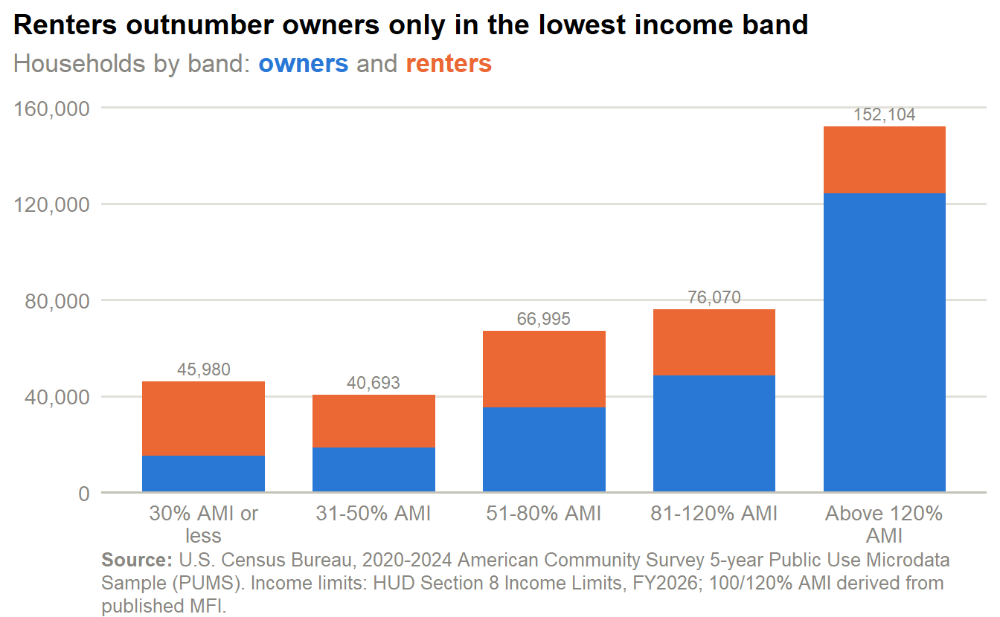
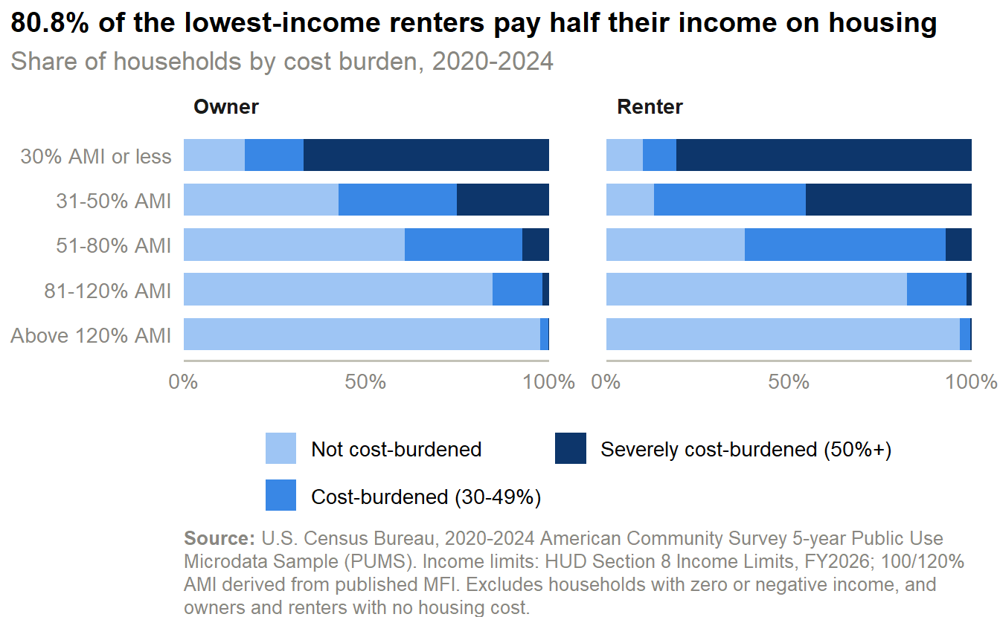
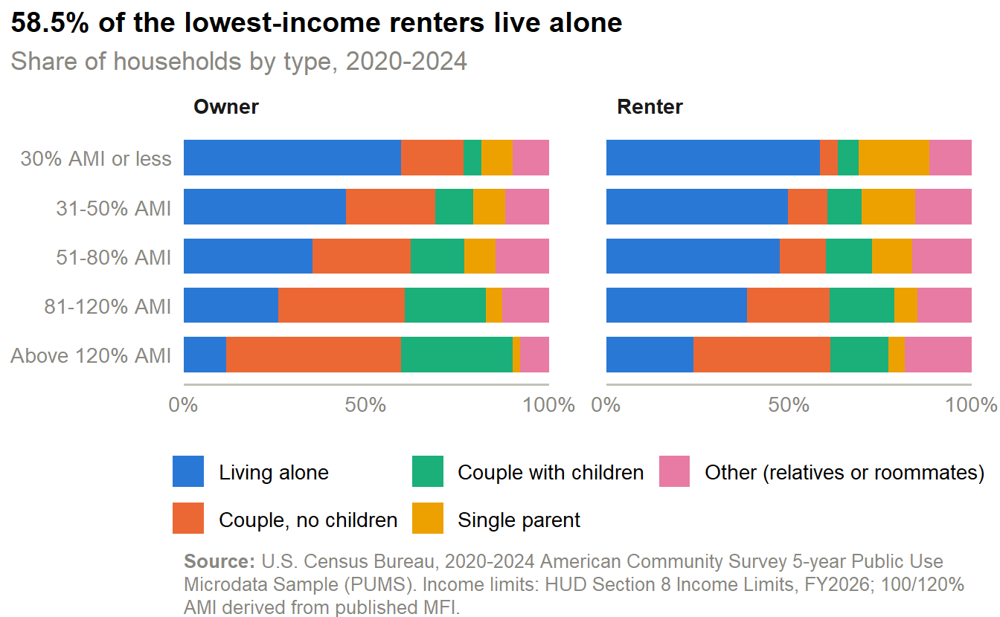
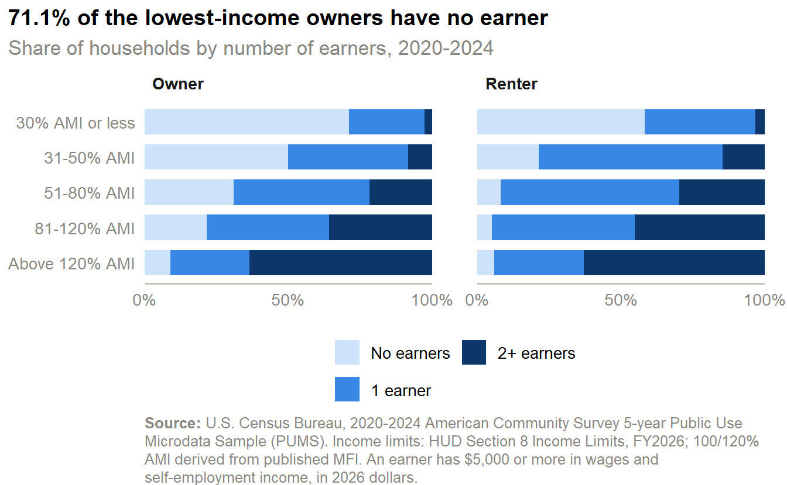
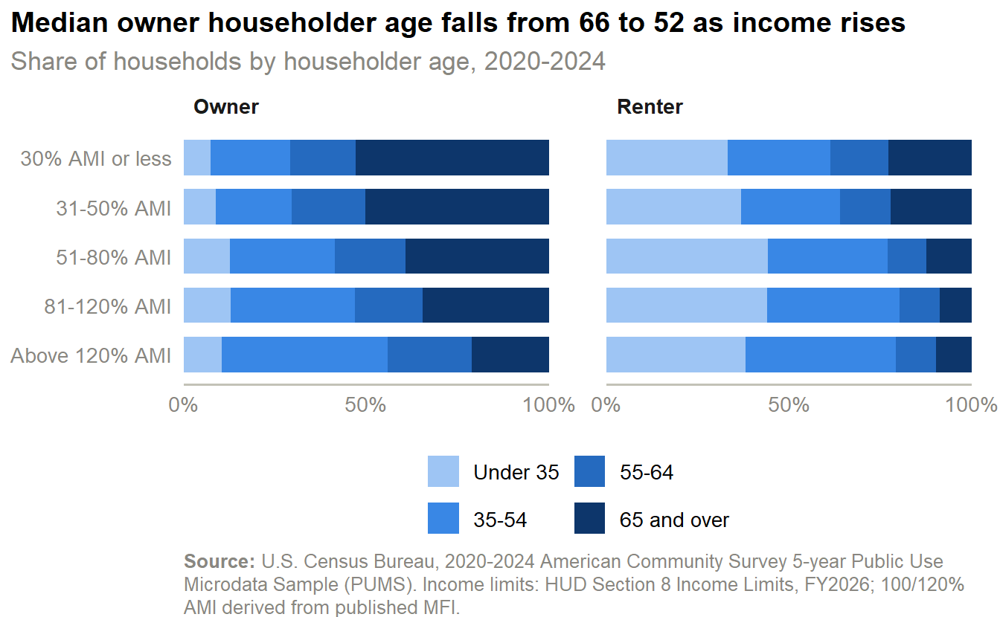
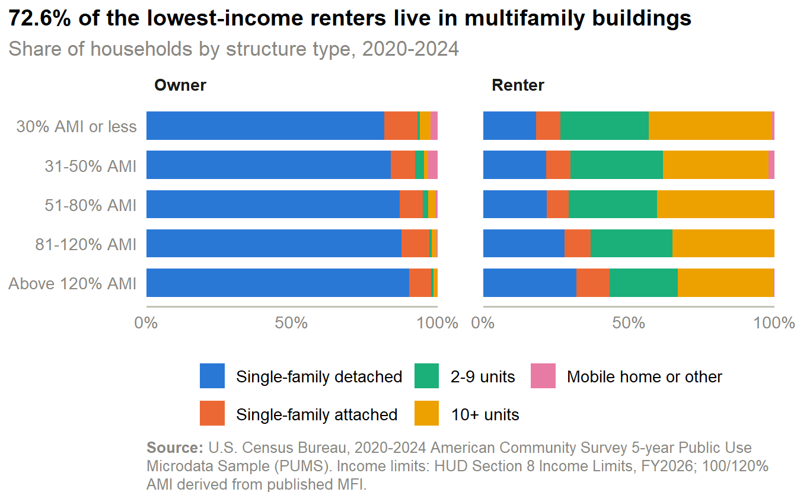

| Household size | 30% AMI | 50% AMI | 80% AMI | 100% AMI | 120% AMI |
|---|---|---|---|---|---|
| 1 | $23,850 | $39,750 | $63,600 | $79,500 | $95,400 |
| 2 | $27,250 | $45,400 | $72,650 | $90,800 | $108,960 |
| 3 | $30,650 | $51,100 | $81,750 | $102,200 | $122,640 |
| 4 | $34,050 | $56,750 | $90,800 | $113,500 | $136,200 |
| 5 | $38,680 | $61,300 | $98,100 | $122,600 | $147,120 |
| 6 | $44,360 | $65,850 | $105,350 | $131,700 | $158,040 |
Profiles
Households and residents of Richmond city, Henrico, and Chesterfield by income relative to area median income (AMI), and a profile of each income band for owners and renters. Everything here comes from the 2020-2024 ACS Public Use Microdata Sample (PUMS) — household-level survey records rather than the published tables the other pages use.
This page covers the core three localities only
PUMS reports geography only as Public Use Microdata Areas (PUMAs). The seven PUMAs used here tile Richmond city (2), Henrico (2), and Chesterfield (3) exactly, so every figure is for those three localities and nothing else. The other fourteen localities of the 17-locality region are not included, so totals on this page (381,842 households, 924,266 residents) will not match pages that cover the full region. PUMS households are within 1% of the ACS published counts by tenure for these three localities.
How the income bands are defined
A household’s band compares its income with the HUD FY2026 income limit for its size. The Richmond area’s median family income is $113,500; the 4-person limits are 30%, 50%, 80%, 100%, and 120% of that (Table 1). PUMS incomes are inflated to 2026 dollars before the comparison, and the same Richmond-area limits are applied to all seven PUMAs. The 30% AMI or less band includes 4,823 households (1.3%) with zero or negative income. Vacant units and group quarters are excluded.
Renters sit in the lower income bands, owners in the highest

- Across the core three, 40.2% of the 381,842 households earn 80% of AMI or less: 28.7% of owners and 60.3% of renters.
- 51.3% of owner households earn more than 120% of AMI, against 20.0% of renters.
- Renters are spread across the bands rather than concentrated in one: 21.9% are at 30% of AMI or less and 22.6% are in the 51-80% band.
- Residents follow the same pattern: 34.8% of the 924,266 people in households live in a household at 80% of AMI or less.

| Income band | Owners | Renters | All households | Renter share | Residents |
|---|---|---|---|---|---|
| 30% AMI or less | 15,381 | 30,599 | 45,980 | 67% | 89,386 |
| 31-50% AMI | 18,685 | 22,008 | 40,693 | 54% | 82,973 |
| 51-80% AMI | 35,453 | 31,542 | 66,995 | 47% | 148,878 |
| 81-120% AMI | 48,626 | 27,444 | 76,070 | 36% | 184,680 |
| Above 120% AMI | 124,206 | 27,898 | 152,104 | 18% | 418,349 |
| All income levels | 242,351 | 139,491 | 381,842 | 37% | 924,266 |
- Renters outnumber owners only in the 30% AMI or less band, where they are 66.5% of households; the 31-50% AMI band is nearly even (54.1% renters).
- Renters make up 18.3% of households above 120% of AMI, against 36.5% of all households.
- The largest single group is owner households above 120% of AMI (124,206). Renter households are far more evenly spread, from 22,008 to 31,542 in each band.
Cost burden falls steeply with income, and low-income renters carry the most

- Among households at 30% of AMI or less, 80.8% of renters and 67.2% of owners pay half or more of income on housing.
- Burden falls with each band: renters go from 90.1% cost-burdened (30%+) in the lowest band to 62.0% at 51-80% of AMI and 3.2% above 120%; owners go from 83.2% to 39.4% to 2.4%.
- The renter-owner gap is widest at 31-50% of AMI, where 87.0% of renters are cost-burdened against 57.6% of owners (29 points); by 81-120% of AMI the two are within 2 points.
- Owner costs include mortgage, taxes, insurance, and utilities; renter costs are gross rent.
Household makeup shifts from people living alone to couples as income rises

- Living alone is the most common household type in the lowest band for both tenures: 58.5% of renters and 59.6% of owners.
- Single-parent households are 19.4% of renters at 30% of AMI or less, against 4.5% above 120%.
- Couples with children are 30.4% of owners above 120% of AMI and 4.9% of owners at 30% or less.

- No household member earns $5,000 or more in 71.1% of owners and 58.3% of renters at 30% of AMI or less.
- At the other end, 63.6% of owners and 63.0% of renters above 120% of AMI have two or more earners.
- Most renters at 31-50% of AMI (63.9%) have exactly one earner.
- 37.6% of renter households and 35.3% of owner households at 30% of AMI or less include a member with a disability, against 19.4% and 18.9% above 120%.
Owners in the lowest bands are older; renters are younger at every income level

- The median householder is 66 for owners at 30% of AMI or less and 52 above 120%; for renters the medians are 45 and 39.
- 52.9% of the lowest-income owners are 65 or over — typically a retired homeowner on a fixed income.
- Renters aged under 35 are 44.2% of the 51-80% band and 43.9% of the 81-120% band.

- Black householders are 55.9% of renters at 30% of AMI or less and 23.1% of renters above 120%.
- Among owners the same gradient runs from 39.1% at 30% or less to 16.7% above 120%.
- White non-Hispanic householders are 69.9% of owners above 120% of AMI.
- Hispanic or Latino householders are 12.8% of renters at 31-50% of AMI, their largest share among renter bands.

- Single-family detached homes house 81.6% of owners at 30% of AMI or less and 90.3% of owners above 120%.
- Renters at 30% of AMI or less live in buildings of 2 or more units at a rate of 72.6%; above 120% the share is 56.2%.
- 43.4% of renters above 120% of AMI live in single-family homes, against 26.5% of renters at 30% or less.
Residents: children are most common in the lowest-income renter households, older adults in the lowest-income owner households

- Children under 18 are 32.6% of residents in renter households at 30% of AMI or less and 20.6% in owner households of that band.
- People 65 and over are 35.7% of residents in the lowest-income owner households, against 13.9% above 120% of AMI.
- 21.3% of residents in renter households at 30% of AMI or less have a disability, against 9.6% above 120%.

- Among adults 25 and over, 13.5% of residents of the lowest-income renter households hold a bachelor’s degree or higher, against 55.3% above 120% of AMI.
- 25.7% of people 16 and over in the lowest-income owner households are employed — low because so many householders are 65 or over — against 37.7% in the lowest-income renter households.
- Above 120% of AMI, 74.4% of owner-household residents 16 and over are employed.
Each band by tenure, side by side
| Tenure | Income band | Households | Median income | Median housing cost | Median age | Cost-burdened (30%+) | Severely (50%+) |
|---|---|---|---|---|---|---|---|
| Owner | 30% AMI or less | 15,381 | $15,166 | $943 | 66 | 83% | 67% |
| 31-50% AMI | 18,685 | $35,806 | $1,027 | 65 | 58% | 25% | |
| 51-80% AMI | 35,453 | $60,023 | $1,367 | 60 | 39% | 7% | |
| 81-120% AMI | 48,626 | $93,176 | $1,529 | 57 | 16%* | 2%* | |
| Above 120% AMI | 124,206 | $191,690 | $2,082 | 52 | 2%* | 0%* | |
| Renter | 30% AMI or less | 30,599 | $12,904 | $1,283 | 45 | 90% | 81% |
| 31-50% AMI | 22,008 | $35,766 | $1,409 | 42 | 87% | 45% | |
| 51-80% AMI | 31,542 | $57,862 | $1,567 | 37 | 62%* | 7%* | |
| 81-120% AMI | 27,444 | $88,390 | $1,712 | 37 | 18%* | 1%* | |
| Above 120% AMI | 27,898 | $155,837 | $1,952 | 39 | — | — |
- Median household income runs from $12,904 for renters at 30% of AMI or less to $155,837 above 120%; for owners from $15,166 to $191,690.
- Median monthly housing cost for renters rises only from $1,283 to $1,952 across the same bands, which is why burden falls so steeply.
- Lowest-income owners pay a median of $943 a month, a figure that includes owners with no mortgage.
Reliability of the profile cells
Counts and medians in every band are high-reliability. Shares are noisier where a category is small: of the 459 category-by-band-by-tenure shares estimated, 54 are medium-reliability (CV 15-30) and 9 are low-reliability (CV above 30). All of them are small categories — none exceeds 11.4% of a band, and the low-reliability ones are under 3.2% (for example, severely cost-burdened households above 120% of AMI). Tables suppress low-reliability cells (—) and mark medium ones (*); the stacked bars show every estimate, and a very thin segment should not be read as a precise number. Standard errors come from the 80 Census replicate weights.
What this page shows
- Who is lower-income: 40.2% of households — 60.3% of renters and 28.7% of owners — earn 80% of AMI or less.
- Where: Richmond city has the highest share (50.9%), but only 44.6% of lower-income renters live there — most are in Henrico and Chesterfield.
- Burden: 80.8% of renters at 30% of AMI or less pay half or more of income on housing; above 120% of AMI, 3.2% are cost-burdened.
- Makeup: the lowest bands are mostly people living alone (58.5% of renters), older owners, and Black householders (55.9% of renters); above 120% of AMI, 78.3% of owners and 53.2% of renters are couples.
- Caveat: this page covers Richmond city, Henrico, and Chesterfield only, not the 17 localities used on the other pages.